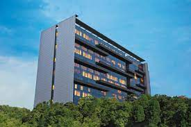

HOTELS

Featuring an outdoor swimming pool, spa and wellness centre and fitness centre, Trident, Hyderabad is close to Raheja Mindspace IT Park. It has a well-equipped business centre and meeting space. Free parking facility is available. Complimentary WiFi is available in all rooms. The hotel provides easy access to technological corporations and Hyderabad International Convention Centre. Shilparamam Arts village is 3 km away. It is 14 km to Golconda Fort, 20 km to Hussain Sagar Lake and 2 km to IKEA. The Secunderabad Railway Station is 18 km while Rajiv Gandhi International Airport is 35 km
Taj Falaknemar Palace
SPark Hyatt Hyderabad, situated in the plush Banjara Hills, is one of the most luxurious 5 star hotels in Hyderabad. With opulent architecture and unparalleled service, it’s a journey that unfolds into rare and intimate experiences. Enjoy stunning art in the hotel, sumptuous suites, a lavish spa, gourmet restaurants, and more. This luxury hotel in Hyderabad offers 185 spacious and stylishly designed rooms and 24 suites. The property is also the first luxury business hotel in Hyderabad to offer 41 fully serviced pet friendly luxury apartments. Its luxurious rooms feature a coffee machine and a walk-in closet. A 24-hour room service, concierge and laundry services for the convenience of guests.
Kakahu Guest House
Located 5 minutes from Rajiv Gandhi International Airport, Novotel Hyderabad Airport offers comfortable accommodation and free Wi-Fi. It features a spa, salon an outdoor pool and 2 brand new restaurants. Each room at the Novotel Hyderabad Airport has a flat-screen TV with cable channels, a minibar and air conditioning. Some rooms are located right next to the pool. Guests can enjoy a workout at the 24-hour fitness centre or make use of the various office services at the well-equipped business centre. There is a sports arena, state of the art gym and a spa. The hotel offers an airline kiosk for flight check-in.